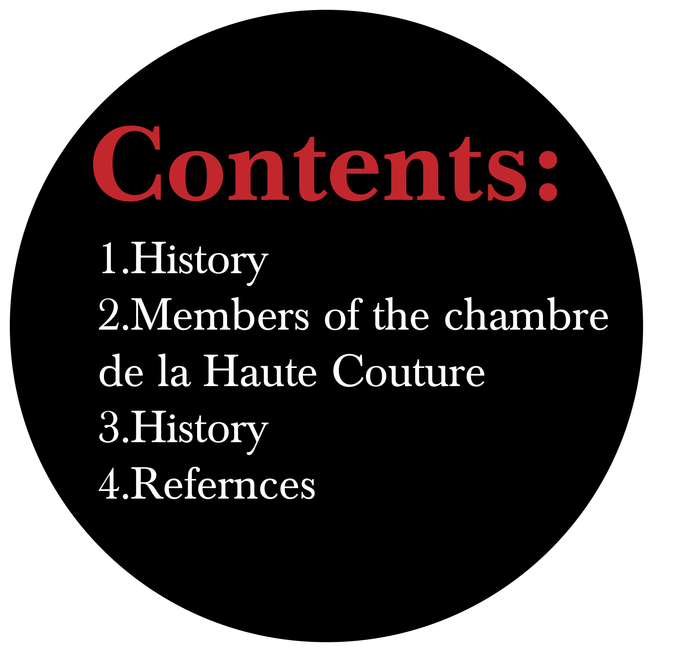

Haute couture can be referenced back as early as the 1700s. Rose Bertin, the French fashion designer to Queen Marie Antoinette, can be credited for bringing fashion and haute couture to French culture.[14] French leadership in European fashion continued into the 18th century when influence was sourced from art, architecture, music, and fashions of the French court at Versailles were imitated across Europe.[citation needed] Visitors to Paris brought back clothing that was then copied by local dressmakers. Stylish women also ordered fashion dolls dressed in the latest Parisian fashion to serve as models.

As railroads and steamships made European travel easier, it was increasingly common for wealthy women to travel to Paris to shop for clothing and accessories. French fitters and dressmakers were commonly thought to be the best in Europe, and real Parisian garments were considered better than local imitations.The couturier Charles Frederick Worth (March 10, 1895), is widely considered the father of haute couture as it is known today. Although born in Bourne, Lincolnshire, England, Worth made his mark in the French fashion industry. Revolutionizing how dressmaking had been previously perceived, Worth made it so the dressmaker became the artist of garnishment: a fashion designer. While he created one-of-a-kind designs to please some of his titled or wealthy customers, he is best known for preparing a portfolio of designs that were shown on live models at the House of Worth. Clients selected one model, specified colors and fabrics, and had a duplicate garment tailor-made in Worth's workshop. Worth combined individual tailoring with a standardization more characteristic of the ready-to-wear clothing industry, which was also developing during this period.Following in Worth's footsteps were Callot Soeurs, Patou, Poiret, Vionnet, Fortuny, Lanvin, Chanel, Mainbocher, Schiaparelli,Balenciaga, and Dior. Some of these fashion houses still exist today, under the leadership of modern designers.In the 1960s, a group of young designers who had trained under men like Dior and Balenciaga left these established couture housesand opened their own establishments.
The most successful of these young designers were Yves Saint Laurent, Pierre Cardin, André Courrèges, Ted Lapidus, and Emanuel Ungaro. Japanese native and Paris-based Hanae Mori was also successful in establishing her own line.Lacroix is one of the fashion houses to have been started in the late 20th century. Other new houses have included Jean-Paul Gaultier and Thierry Mugler. Due to the high expenses of producing haute couture collections, Lacroix and Mugler have since ceased their haute couture activities.[16] Modernized haute couture shows are not designed and made to be sold, rather they are exactly what they are displayed for - for show. Instead of being constructed for the purpose of selling and making money, they are made to further the publicity, as well as perception and understanding of brand image.For all these fashion houses, custom clothing is no longer the main source of income, often costing much more than it earns through direct sales; it only adds the aura of fashion to their ventures in ready-to-wear clothing and related luxury products such as shoes and perfumes, and licensing ventures that earn greater returns for the company. Excessive commercialization and profit-making can be damaging, however. Cardin, for example, licensed with abandon in the 1980s and his name lost most of its fashionable cachet when anyone could buy Cardin luggage at a discount store. It is their ready-to-wear collections that are available to a wider audience, adding a splash of glamour and the feel of haute couture to more wardrobes. The 1960s also featured a revolt against established fashion standards by mods, rockers, and hippies, as well as an increasing internationalization of the fashion scene. Jet travel had spawned a jet set that partied—and shopped—just as happily in New York as in Paris. Rich women no longer felt that a Paris dress was necessarily better than one sewn elsewhere. While Paris is still pre- eminent in the fashion world, it is no longer the sole arbiter of fashion.
>In France, the term haute couture is protected by law and is defined by the Chambre de commerce et d'industrie de Paris based in Paris. The chambre syndicale de la haute couture is defined as "the regulating commission that determines which fashion houses are eligible to be true haute couture houses". Their rules state that only "those companies mentioned on the list drawn up each year by a commission domiciled at the Ministry for Industry are entitled to avail themselves" of the label haute couture. The Chambre Syndicale de la Couture Parisienne is an association of Parisian couturiers founded in 1868 as an outgrowth of medieval guilds that regulate its members in regard to piracy of styles, dates of openings for collections, number of models presented, relations with press, questions of law and taxes, and promotional activities. Formation of the organization was brought about by Charles Frederick Worth. An affiliated school was organized in 1930 called L'Ecole de la Chambre Syndicale de la Couture. The school helps bring new designers to help the "couture" houses that are still present today. Since 1975, this organization has worked within the Federation Francaise, de couture, des Couturiers et des Createurs de Mode.
“The regulating commission that determines which fashion houses are eligible to be true haute couture houses “
The criteria for haute couture were established in 1945 and updated in 1992. To earn the right to call itself a couture house and to use the term haute couture in its advertising and any other way, members of the Chambre syndicale de la haute couture must follow these rules:
However, the term haute couture may have been misused by ready-to-wear brands since the late 1980s, so that its true meaning may have become blurred with that of pret-a-porter (the French term for ready-to-wear fashion) in the public perception. Every haute couture house also markets pret-a-porter collections, which typically deliver a higher return on investment than their custom clothing. Falling revenues have forced a few couture houses to abandon their less profitable couture division and concentrate solely on the less prestigious pret-a-porter. These houses are no longer considered haute couture. Many top designer fashion houses, such as Chanel, use the word for some of their special collections. These collections are often not for sale or they are very difficult to purchase. Sometimes, "haute couture" is inappropriately used to label non-dressmaking activities, such as fine art, music and much more.
For the Spring-Summer 2012 season the official list of members is: Official members Adeline Andre—Gustavo Lins Chanel (Karl Lagerfeld) Christian Dior Christophe Josse Franck Sorbier Givenchy Jean Paul Gaultier Maurizio Galante—Stéphane Rolland
Elie Saab Giorgio Armani Giambattista Valli Valentino Versace
Alexandre Vauthier
Bouchra Jarrar Iris Van HerpenRalph & Russo—Julien Fournié Maxime Simoens—Yiqing Yin new in season 2012Loulou de la Falaise—Massaro—On aura tout vu Recent guest members have included the fashion houses of Boudicca, Cathy Pill, Richard René and Udo Edling, as well as Eymeric François, Gerald Watelet , Nicolas Le Cauchois [11] and Wuyong.[12] In the 2008/2009 Fall/Winter Haute Couture week, Emanuel Ungaro showed as an Official Member.